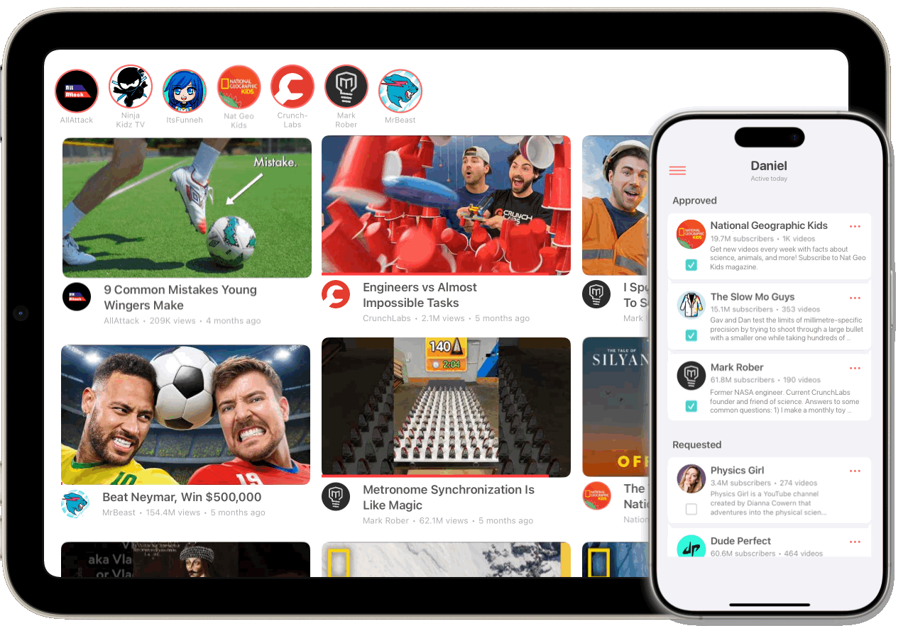
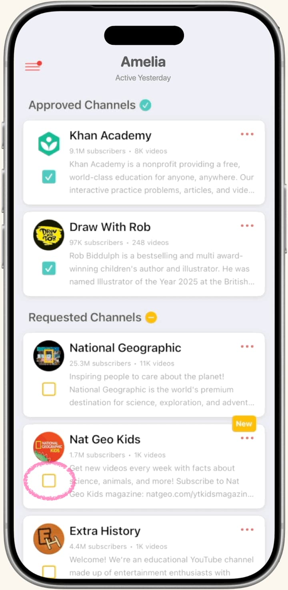

Finally, a better way to watch YouTube

Only the channels you approve. Simple as that.
Built for kids. Designed for parents.
They request, you approve
YouTube, without the worry
Visor gives your kiddos the freedom to watch, without you having to constantly hover over their shoulder.
They request, you approve

One tap. You're done.

A safe space for all their faves
Once you approve channels, Visor becomes their one place to watch, with fresh videos from the creators they love—all from their iPhone or iPad, ad-free and with no Shorts.
Fresh videos from the creators they love. Ad-free, with no Shorts, and only from channels you approve.

 Popular
Popular
 Art
Art
 Science and Tech
Science and Tech
 Sports & Fitness
Sports & Fitness
 DIY & Crafts
DIY & Crafts
 Comedy
Comedy
 Music
Music
 Gaming
Gaming
 Entertainment
Entertainment